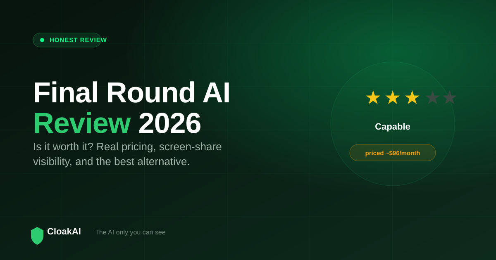
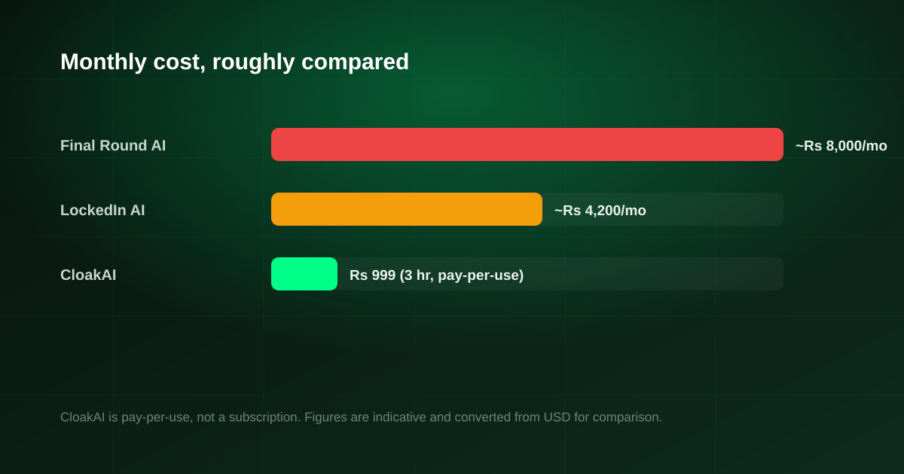

Final Round AI is one of the best-known real-time interview tools on the market, and its "Interview Copilot" branding shows up in almost every search for live interview help. This Final Round AI review looks past the marketing at the three things that actually decide whether it is worth it: what it costs, whether it stays hidden on a screen share, and how it compares to cheaper alternatives. If you are asking is Final Round AI worth it, this is the honest answer.
Final Round AI is a capable, feature-rich tool, but at roughly $96/month it is one of the most expensive options and reviewers have repeatedly flagged screen-share visibility concerns. For most candidates, and especially in India, a native, invisible, pay-per-use tool like CloakAI from just ₹499 delivers the part that matters in a live interview at a fraction of the cost.
What Is Final Round AI?
Final Round AI is a Western interview-preparation platform that bundles several tools: an "Interview Copilot" that listens to your interview and suggests answers in real time, a mock-interview simulator, a resume builder, and a question bank. The live copilot is the headline feature and the reason people compare it to tools like Parakeet AI, Chiku AI and CloakAI. It runs alongside your video call and reads the interviewer's questions to generate on-the-fly suggestions.
Final Round AI Pricing: Is It Worth the Money?
Pricing is where most people hesitate. Final Round AI is sold as a subscription, and its effective cost lands around $96/month depending on the plan and billing period. In rupees that is well over ₹8,000 for a single month, and it renews. For a candidate running a handful of interviews over a few weeks, paying a recurring Western subscription is poor value compared to buying only the hours you need.
There is also no simple free way to sit through a full live interview with the paid copilot before committing, which makes it hard to judge quality until after you have paid.

New here? Try every feature free for 20 minutes, no signup and no card needed.
Try CloakAI for free 20-minute free trial · No credit card required · Windows 10 & 11Final Round AI Review: Strengths and Weaknesses
What it does well
- Genuinely real-time. The copilot keeps up with a live conversation and produces usable suggestions.
- All-in-one. Mock interviews, resume tools and a question bank sit in one place, which suits people who want a full prep suite, not just live help.
- Polished product. The interface is mature and the onboarding is smooth.
Where it falls short
- Price. Around $96/month is the highest tier of this category, and it is a recurring charge rather than pay-per-use.
- Screen-share visibility. Multiple reviews have reported that the assistant can become visible when you share your screen or switch windows, which is the one failure a live tool cannot afford.
- USD billing. For Indian candidates, dollar pricing adds cost and card friction.
Final Round AI vs CloakAI
| Feature | Final Round AI | CloakAI |
|---|---|---|
| Real-time live answers | ✓ | ✓ |
| Pricing model | Subscription ~$96/mo | Pay-per-use ₹499 (1 hr) / ₹999 (3 hr) |
| Free trial of live help | ⚠ Limited | ✓ 20 min full |
| OS-level screenshare invisibility | ⚠ Visibility reported | ✓ Content protection |
| Native desktop app | ⚠ Browser-centric | ✓ Windows |
| Resume personalisation | ✓ | ✓ Deep |
| INR / UPI payments | ✗ USD | ✓ PhonePe / UPI |
Final Round AI is a suite. CloakAI is a scalpel: it does the one thing that decides a live interview, staying invisible while it answers, and it costs a fraction as much.
Not ready to buy? Test every one of those features free for 20 minutes first.
Try CloakAI for free 20-minute free trial · No credit card required · Windows 10 & 11The Best Final Round AI Alternative
If you want the full prep suite and money is no object, Final Round AI is a reasonable pick. But if your real need is dependable, invisible help during the actual interview, the better fit for most people is a focused native tool. CloakAI is the closest alternative: a native Windows app that is invisible at the OS level through content protection, personalised to your resume, with an on-screen scan for coding questions, a free 20-minute trial, and INR pricing from ₹499. Parakeet AI and Chiku AI are also cheaper than Final Round, but Parakeet has no free plan and Chiku runs in the browser, which is more detectable.
Final Verdict
Is Final Round AI worth it? It is powerful and polished, but it is the most expensive tool in its class, bills in dollars, and carries the screen-share visibility risk that matters most in a live interview. For Indian job seekers who want to try before they buy and pay only for the hours they use, CloakAI is the smarter choice. Test it free for 20 minutes and judge the quality yourself before spending anything.
Line it up for your next interview and try the whole thing free for 20 minutes.
Try CloakAI for free 20-minute free trial · No credit card required · Windows 10 & 11